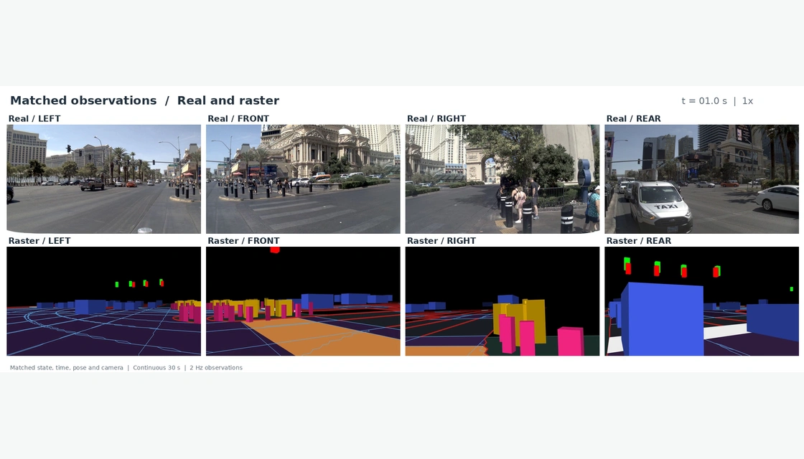

GRAD
Geometric Rasterization as Data Augmentation for Driving
GRAD investigates whether geometric rasters can approximately replace GS observations of matched simulated states and complement appearance-rich training data.
Data Science · EPFL
I am a Data Science master's student at EPFL, currently at EPFL's VITA. I study visual driving, geometric learning, and interactive world models.
Previously, I researched multimodal activity recognition at EPFL's LTS5 and the Schindler EPFL Lab. I hold a bachelor's degree from Harbin Institute of Technology, Shenzhen.

Geometric Rasterization as Data Augmentation for Driving
GRAD investigates whether geometric rasters can approximately replace GS observations of matched simulated states and complement appearance-rich training data.
Master's thesis · VITA Lab, EPFL
Studying geometric consistency across views in interactive world models.
LTS5, EPFL & Schindler EPFL Lab · Prof. Jean-Philippe Thiran & Dr. Malcolm Mielle
Riemannian optimization for hierarchical motion representations, with inertial and visual information.
Bachelor's thesis · HITSZ · Prof. Xinming Zhang
Trajectory reconstruction, signal fusion, and model compression. University Outstanding Bachelor's Thesis Award.
HITSZ · Prof. Yi Zhao
Motion sensing, spatial trajectory similarity, and handwriting recognition.
MSc in Data Science
GPA: 5.48 / 6.0
BEng in Data Science and Big Data Technology
Rank: 2 / 112 · GPA: 93.227 / 100
Research in geometric learning, visual driving, and world models.